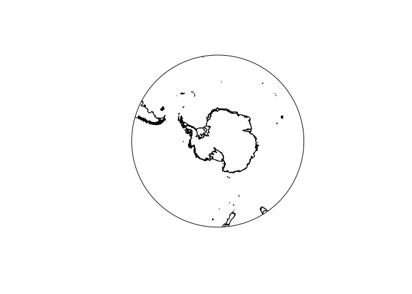

Quantarctica is a collection of Antarctic geographical datasets which works with the free, cross-platform, open-source software QGIS. It includes community-contributed, peer-reviewed data from ten different scientific themes and a professionally-designed basemap.
The quantarcticR package provides access to Quantarctica data sets for R users, without needing QGIS to be installed. R users can use these data sets with e.g. the raster, sp, or sf packages.
Installation
You can install the development version of quantarcticR from GitHub with:
remotes::install_github("SCAR/quantarcticR")
Example
library(quantarcticR)
quantarcticR will download data from whichever Quantarctica mirror has been selected. The USA mirror is chosen by default, but you can change this: see help("qa_mirror").
List all available datasets:
ds <- qa_datasets() head(ds) #> # A tibble: 6 x 5 #> layername #> <chr> #> 1 Overview place names #> 2 COMNAP listed facilities #> 3 Subantarctic stations #> 4 SCAR Composite gazetteer #> 5 IBO-IOC GEBCO Features (point) #> 6 IBO-IOC GEBCO Features (multipoint) #> main_file #> <chr> #> 1 c:/data/Quantarctica3/Miscellaneous/OverviewPlaceNames/OverviewPlaceNames.shp #> 2 c:/data/Quantarctica3/Miscellaneous/Stations/COMNAP_Antarctic_Facilities.shp #> 3 c:/data/Quantarctica3/Miscellaneous/Stations/Sub-antarctic_Stations.shp #> 4 c:/data/Quantarctica3/Miscellaneous/SCAR_CompositeGazetteer/SCAR_CompositeGaz~ #> 5 c:/data/Quantarctica3/Miscellaneous/IHO-IOC_GEBCO_UnderseaFeatureNames/GEBCO_~ #> 6 c:/data/Quantarctica3/Miscellaneous/IHO-IOC_GEBCO_UnderseaFeatureNames/GEBCO_~ #> type cached download_size #> <chr> <lgl> <fs::bytes> #> 1 shapefile TRUE 19.74K #> 2 shapefile TRUE 691.92K #> 3 shapefile TRUE 691.92K #> 4 shapefile TRUE 329.05M #> 5 shapefile TRUE 1.25M #> 6 shapefile TRUE 1.25M
Fetch one and plot it:
res <- qa_get("ADD Simple basemap", verbose = TRUE) #> #> Fri Sep 04 03:49:25 2020 #> Synchronizing dataset: ADD Simple basemap #> Source URL http://quantarctica.tpac.org.au/Quantarctica3/Miscellaneous/SimpleBasemap/ #> -------------------------------------------------------------------------------------------- #> #> this dataset path is: C:\data\Quantarctica3/Miscellaneous//SimpleBasemap #> visiting http://quantarctica.tpac.org.au/Quantarctica3/Miscellaneous/SimpleBasemap/ ... done. #> file already exists, not downloading: http://quantarctica.tpac.org.au/Quantarctica3/Miscellaneous/SimpleBasemap/ADD_DerivedLowresBasemap.cpg ... file already exists, not downloading: http://quantarctica.tpac.org.au/Quantarctica3/Miscellaneous/SimpleBasemap/ADD_DerivedLowresBasemap.dbf ... file already exists, not downloading: http://quantarctica.tpac.org.au/Quantarctica3/Miscellaneous/SimpleBasemap/ADD_DerivedLowresBasemap.prj ... file already exists, not downloading: http://quantarctica.tpac.org.au/Quantarctica3/Miscellaneous/SimpleBasemap/ADD_DerivedLowresBasemap.qix ... file already exists, not downloading: http://quantarctica.tpac.org.au/Quantarctica3/Miscellaneous/SimpleBasemap/ADD_DerivedLowresBasemap.shp ... file already exists, not downloading: http://quantarctica.tpac.org.au/Quantarctica3/Miscellaneous/SimpleBasemap/ADD_DerivedLowresBasemap.shx ... file already exists, not downloading: http://quantarctica.tpac.org.au/Quantarctica3/Miscellaneous/SimpleBasemap/ADD_DerivedLowresBasemap.txt ... #> Fri Sep 04 03:49:25 2020 dataset synchronization complete: ADD Simple basemap library(raster) plot(res)

See the introductory vignette for more information.
See also
RQGIS provides an R-QGIS interface, via Python middleware.